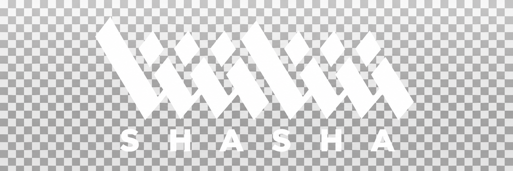

Video Editing
Story-first editing for documentaries, commercials and branded content.
Crafting cinematic experiences through the art of editing.

SHASHAA selection of stories, brands and broadcasts shaped in the edit.
Project visuals are conceptual placeholders, not official video thumbnails. Projects without a supplied link are displayed without a watch button.
From the first cut to the final frame — creative execution and technical oversight for stories that deserve to be seen.
Story-first editing for documentaries, commercials and branded content.
Creative oversight, consistency and delivery across editing teams.
Graphics and visual storytelling that elevate the cut.
Visual finishing and color direction for a cohesive look.
Sound-led pacing and coordination of polished audio finishing.
AI video workflows integrated into modern post-production.
Efficient review, versioning and handoff for demanding productions.
I'm Hussain — a Riyadh-based Editor & Editing Supervisor with over 10 years of experience shaping visual stories across television, documentaries, branded content and commercial productions.
I combine hands-on editing with team supervision, working closely with directors, producers and clients to take ideas from raw footage to finished films.
Have a project in mind? Let's turn the footage into a story worth remembering.
GET IN TOUCH ↗Hussainfilm@gmail.com · 00966538390866 · WhatsApp ↗